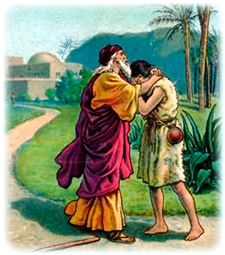
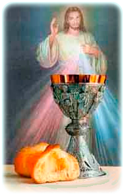

ASOCIACIÓN APOSTOLES DE LA DIVINA MISERICORDIA - ASTURIAS

(Reproducir / Detener)
Este apostolado de la Divina Misericordia es un movimiento mundial en el que miles de almas procuran vivir con espíritu de humildad y confianza en Dios, practicando las obras de misericordia hacia el prójimo, y oran implorando al Padre Celestial, por la pasión y muerte de Jesucristo, su Misericordia para todo el mundo.
Se vive desde la espiritualidad de la Divina Misericordia que emana del “Diario de Santa Faustina Kowalska”, fallecida en 1938 y canonizada por S.S. Juan Pablo II el 30 de abril del año 2000.
SEDE: C/ Dionisio Ridruejo, nº3, 2ºB, C.P. 33007
OVIEDO, ASTURIAS, ESPAÑA.
Tfno. 985257380 / 659228209
Correo electrónico: asturias@div-misericordia.com.
Nos hemos constituido como Asociación Privada de fieles laicos, católica, con personalidad Jurídica Privada, cuyos Estatutos fueron aprobados para la Archidiócesis de Oviedo, el 10 de Enero de 2008.
Nuestro primer encuentro, tuvo lugar el 5 de Octubre del año 2005, día de la Festividad de Santa Faustina Kowalska. Nos habíamos reunido para una Celebración de la Palabra, sin saber que ese día se celebraba la Festividad de Santa Faustina Kowalska. Cuando al final alguien lo dijo, sentimos que La Divina Misericordia y Santa Faustina Kowalska nos habían reunido. Desde entonces, somos conscientes, que tanto La Divina Misericordia como Santa Faustina, nos guían en todo nuestro caminar.
El primer año, nos reuníamos para orar. El segundo año comenzamos a entronizar cuadros de la Divina Misericordia, por Parroquias, Iglesias y Capillas con culto público. En este tiempo hemos entronizado un buen número de cuadros que aumentan cada año, principalmente de la Divina Misericordia y alguno también de Santa Faustina Kowalska. Estas imágenes son de lienzo y de gran tamaño. Despiertan mucha devoción en quienes las contemplan. No hay que olvidar los muchos signos teológicos que encierra la imagen de la Divina Misericordia. Resaltan principalmente los dos rayos que salen del pecho de la imagen. Son la sangre y el agua que brotaron de la herida abierta en el costado de Jesús, de donde nace la Iglesia. El rayo azul significa el Bautismo y el rayo rojo la Eucaristía, principales sacramentos de la Iglesia. Por ello los apóstoles de la Divina Misericordia han de procurar llevar las almas a la práctica de todos los sacramentos, luz, alimento y fuerza para quienes los reciben y para toda la Iglesia. En cada lugar donde hay entronizado un cuadro de la Divina Misericordia, surge un grupo de apóstoles de la Divina Misericordia que difunden esta devoción en su entorno y rezan en privado y preferentemente en grupo, las oraciones que el Señor le encomendó a Santa Faustina Kowalska, siguiendo las enseñanzas de Jesús que en su Evangelio nos dice: “Os aseguro que el Padre os concederá todo lo que pidáis en mi nombre… vosotros mismos presentareis vuestras súplicas al Padre en mi nombre y yo voy a interceder ante el Padre por vosotros”. También nos dice: “donde dos o más están reunidos en mi nombre allí estoy yo”. A estas y otras actividades que cada año iniciamos, unimos diariamente la práctica de las obras de misericordia con todos nuestros hermanos.
Como se puede leer en nuestros estatutos y siguiendo lo manifestado por Jesús en su Evangelio: “Id a las ovejas extraviadas” o “no necesitan de médico los sanos sino los enfermos”, con frecuencia salimos a evangelizar a los jóvenes en los lugares donde se reúnen en plazas y calles, les invitamos a venir con nosotros a las parroquias y principalmente a la práctica de las obras de misericordia. Generalmente nos sentimos acogidos por estos jóvenes que están sedientos de Dios sin ellos saberlo. Siempre confiamos en las palabras que el Señor le dice a Santa Faustina, “tu haz todo lo que puedas, que el resto lo hago Yo”. Vamos con la ayuda, confianza y esperanza puesta en el Señor y El los sacará de la calle y los llevará en brazos como el Buen Pastor.
¡DIOS ANSIA PERDONAR!


Cada vez que vas a confesarte, sumérgete en mi Misericordia con gran confianza, para que pueda derramar sobre tu alma la generosidad de mi gracia. Cuando te acerques a la confesión, debes saber que yo mismo te espero en el confesionario. (1602).
“LA EUCARISTIA: DIOS CON NOSOTROS”


“La Eucaristía es el centro del culto que rendimos al AMOR MISERICORDIOSO DE CRISTO, manifestado en su Sagrado Corazón” (Juan Pablo II en Montmartre).
Por ello, todos los apóstoles de la Divina Misericordia han de amar profundamente este sacramento procurando asistir a menudo a la Santa Misa, “memorial de la muerte y resurrección del Señor, culmen y fuente de todo el culto y de toda la vida cristiana, por el que se realiza la unidad del pueblo de Dios y se lleva a término la edificación del Cuerpo de Cristo. Todos los fieles que asisten tanto clérigos como laicos, concurren tomando parte activa, cada uno según su modo propio”. (CIC cns. 897, 899).
También deberán adorarle asiduamente en el Tabernáculo.
Los apóstoles de la Divina Misericordia, han de procurar transmitir y llevar las almas a la práctica de la Santa Misa dominical y los sacramentos.